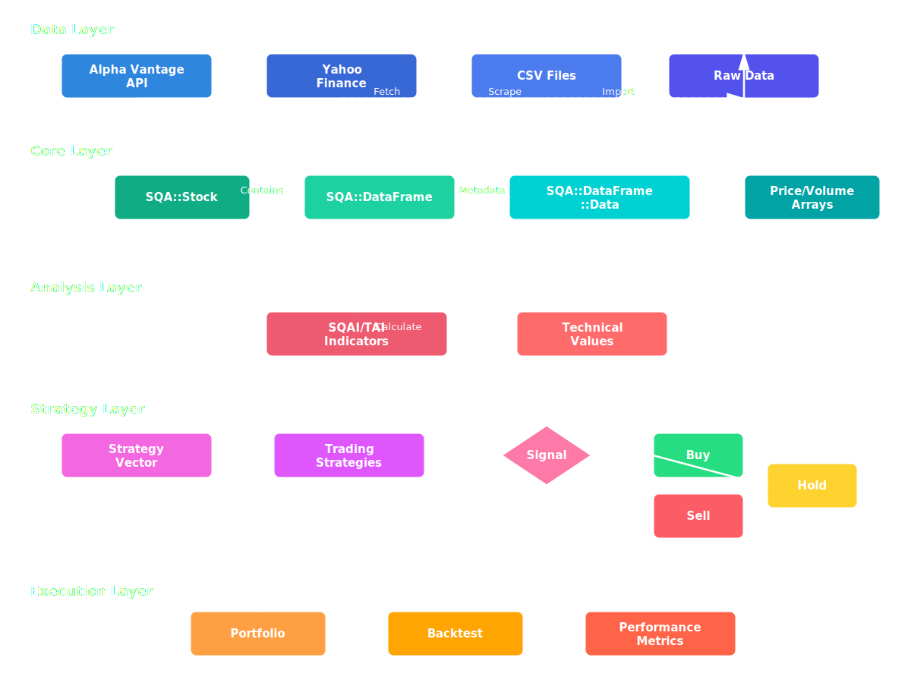
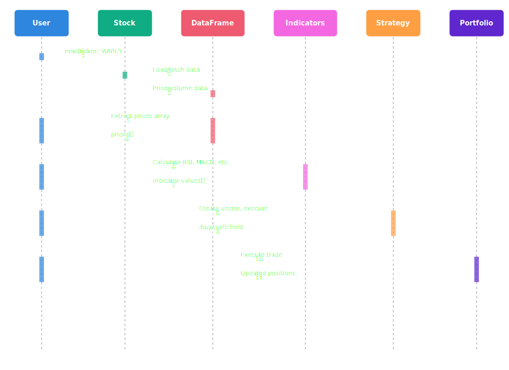

Core Concepts¶
Understanding the fundamental building blocks of SQA.
Overview¶
SQA is built around several key concepts that work together to provide a comprehensive stock analysis framework. This page explains the architecture and how all the pieces fit together.
System Architecture¶

Key Components¶
1. Stock Object (SQA::Stock)¶
The primary domain object representing a stock with all its associated data.
Responsibilities: - Load and cache historical price data - Fetch company overview information - Manage data persistence (JSON metadata + CSV prices) - Provide access to DataFrame for analysis
Example:
stock = SQA::Stock.new(ticker: 'AAPL')
# Access data
stock.ticker # => "aapl"
stock.name # => "Apple Inc"
stock.exchange # => "NASDAQ"
stock.df # => SQA::DataFrame with price/volume
stock.overview # => Hash with company details
2. DataFrame (SQA::DataFrame)¶
High-performance wrapper around Polars for time series data manipulation.
Key Features: - Rust-backed Polars engine (30x faster than pure Ruby) - Columnar operations for efficiency - CSV/JSON import/export - Method delegation to Polars
Standard Columns:
| Column | Description |
|--------|-------------|
| timestamp | Date of trading day |
| open_price | Opening price |
| high_price | Highest price |
| low_price | Lowest price |
| close_price | Closing price |
| adj_close_price | Split/dividend adjusted price |
| volume | Trading volume |
Example:
df = stock.df
# Column operations
prices = df["adj_close_price"].to_a
volumes = df["volume"].to_a
# Statistics (via Polars)
df.data["close_price"].mean
df.data["volume"].sum
3. Technical Indicators (SQAI / SQA::TAI)¶
150+ technical indicators provided by the sqa-tai gem, which wraps TA-Lib.
Categories: - Overlap Studies: SMA, EMA, Bollinger Bands - Momentum: RSI, MACD, Stochastic - Volume: OBV, AD, ADOSC - Volatility: ATR, NATR, True Range - Cycle: Hilbert Transform indicators - Pattern: Candlestick pattern recognition
Example:
prices = stock.df["adj_close_price"].to_a
# Single-value indicators
sma = SQAI.sma(prices, period: 20)
rsi = SQAI.rsi(prices, period: 14)
# Multi-value indicators
macd, signal, histogram = SQAI.macd(prices)
upper, middle, lower = SQAI.bbands(prices, period: 20)
4. Trading Strategies (SQA::Strategy)¶
Framework for creating and executing trading rules.
Interface:
# All strategies implement this interface
class SQA::Strategy::MyStrategy
def self.trade(vector)
# Returns :buy, :sell, or :hold
end
end
Built-in Strategies: - RSI, MACD, SMA, EMA - Bollinger Bands, Stochastic - Volume Breakout, Mean Reversion - KBS (Knowledge-Based System) - Consensus (aggregates multiple strategies)
Example:
require 'ostruct'
vector = OpenStruct.new(
rsi: { trend: :over_sold, value: 28 },
prices: prices
)
signal = SQA::Strategy::RSI.trade(vector)
# => :buy
5. Portfolio (SQA::Portfolio)¶
Track positions, calculate P&L, and manage trades.
Features: - Position tracking (shares per ticker) - Commission handling - Realized/unrealized P&L - Trade history
Example:
portfolio = SQA::Portfolio.new(initial_cash: 10_000, commission: 1.0)
portfolio.buy('AAPL', shares: 10, price: 150.0)
portfolio.sell('AAPL', shares: 5, price: 160.0)
portfolio.cash # Remaining cash
portfolio.positions # Current holdings
portfolio.trades # Trade history
6. Backtesting (SQA::Backtest)¶
Simulate strategies on historical data.
Metrics Generated: - Total return, annualized return - Sharpe ratio, Sortino ratio - Maximum drawdown - Win rate, profit factor - Number of trades
Example:
backtest = SQA::Backtest.new(
stock: stock,
strategy: SQA::Strategy::RSI,
initial_cash: 10_000
)
results = backtest.run
puts "Return: #{results.total_return}%"
puts "Sharpe: #{results.sharpe_ratio}"
Data Flow¶
Understanding how data flows through SQA:

Data Ordering Convention¶
Critical: TA-Lib requires data in ascending chronological order (oldest first).
# Correct order
prices = [100, 102, 105, 103, 108] # oldest → newest
# ^ ^
# index 0 index -1
# Access latest value
current_price = prices.last # or prices[-1]
# Calculate indicator
rsi = SQAI.rsi(prices, period: 14)
current_rsi = rsi.last # Most recent RSI value
Configuration¶
SQA uses a hierarchical configuration system:
1. Default values (lowest priority)
2. Environment variables (SQA_* prefix)
3. Config file (~/.sqa.yml)
4. Runtime settings (highest priority)
Key Settings:
Environment Variables:
File Storage¶
SQA stores data in the configured data directory (default: ~/sqa_data):
~/sqa_data/
├── aapl.csv # Price/volume data
├── aapl.json # Stock metadata
├── msft.csv
├── msft.json
└── dumbstockapi-*.csv # Ticker validation data
Module Structure¶
SQA
├── Stock # Primary domain object
├── DataFrame # Time series data wrapper
│ ├── Data # Stock metadata class
│ ├── AlphaVantage # Alpha Vantage adapter
│ └── YahooFinance # Yahoo Finance adapter
├── Strategy # Strategy framework
│ ├── RSI # RSI strategy
│ ├── MACD # MACD strategy
│ ├── BollingerBands # Bollinger Bands strategy
│ ├── KBS # Knowledge-based system
│ └── ... # Other strategies
├── Portfolio # Position tracking
├── Backtest # Historical simulation
├── Config # Configuration management
├── Ticker # Symbol validation
└── FPOP # Future Period analysis
Learn More¶
-
DataFrames
High-performance data structures powered by Polars
-
Indicators
150+ technical analysis indicators via sqa-tai gem
-
Strategies
Framework for creating and executing trading strategies
-
Portfolio
Track positions, P&L, and trade history
-
Backtesting
Test strategies on historical data
-
Configuration
Set up data directories and API keys
Design Principles¶
1. Plugin Architecture¶
Strategies are pluggable modules that follow a common interface. Add new strategies without modifying core code.
2. Data Source Abstraction¶
Multiple data providers (Alpha Vantage, Yahoo Finance, CSV) share a common interface. Easy to add new sources.
3. Performance First¶
Polars DataFrame operations are vectorized and Rust-backed. Avoid Ruby loops over data.
4. Educational Focus¶
Clear documentation, transparent algorithms, and honest risk disclaimers.
5. Separation of Concerns¶
- Data fetching is separate from analysis
- Indicators are separate from strategies
- Strategies are separate from execution